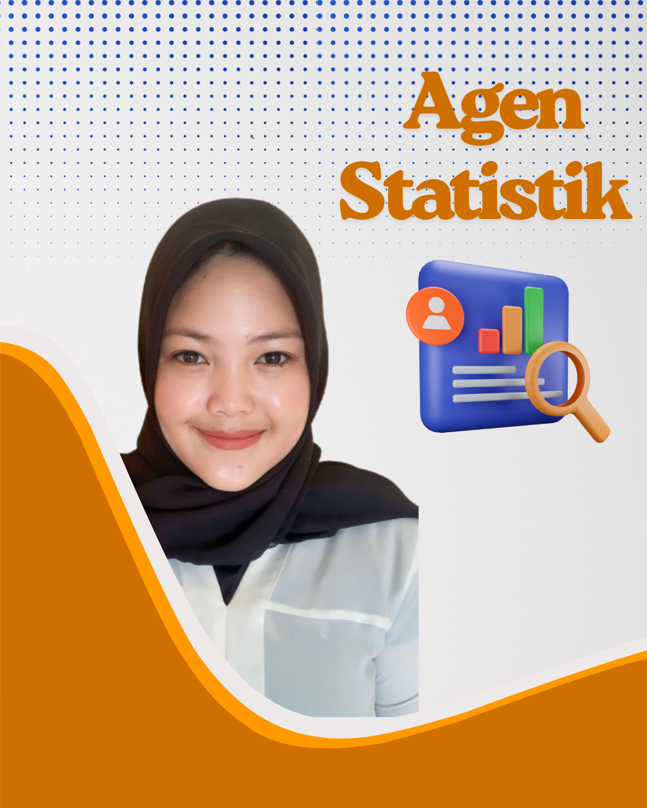

(klik kanan dan buka di tab baru untuk unduh)


Selamat Datang di Portal Satu Data Desa Jeriji
Desa Binaan Program Desa Cinta Statistik Kabupaten Bangka Selatan

Apa itu Desa Cantik?
Desa Cantik atau
Desa Cinta Statistik merupakan program inovatif
dari Badan Pusat Statistik (BPS) yang bertujuan untuk mempercepat
penguatan statistik sektoral di tingkat desa. Program ini mendorong
pemerintah desa agar lebih cakap dalam mengelola dan memanfaatkan
data statistik sebagai bagian dari upaya mewujudkan
Satu Data Desa Indonesia, yakni sistem data yang
terintegrasi, akurat, dan terpercaya.
Program Desa Cantik dilatarbelakangi kondisi dimana
saat ini desa/kelurahan tidak lagi dianggap sebagai
obyek pembangunan, melainkan ditempatkan sebagai
subyek dan ujung tombak pembangunan dalam
peningkatan kesejahteraan masyarakat.
Tujuan Desa Cantik
-
Meningkatkan literasi, kesadaran, dan peran aktif perangkat desa/kelurahan dan masyarakat dalam penyelenggaraan kegiatan statistik.
-
Standardisasi pengelolaan data statistik untuk menjaga kualitas dan keterbandingan indikator statistik.
-
Optimalisasi penggunaan dan pemanfaatan data statistik sehingga program pembangunan di desa/kelurahan tepat sasaran.
-
Membentuk agen-agen statistik pada level desa/kelurahan.
Apa itu Permata Jeriji?
Dalam rangka melaksanakan Program Desa Cantik, Desa Jeriji bersama dengan BPS Kabupaten Bangka Selatan menyelenggarakan kegiatan Permata Jeriji atau Pendataan Rumah Masyarakat secara Terpadu Desa Jeriji Kegiatan ini merupakan upaya strategis untuk memperoleh data yang lebih akurat, khususnya terkait kondisi hunian layak di wilayah Desa Jeriji, Kecamatan Toboali, Kabupaten Bangka Selatan.

üìä Jelajahi Data Kami!
Infografis


Data Kependudukan
Data Kependudukan ini bersumber dari Profil Desa Jeriji Tahun 2023, 2024, dan 2025.
| Tahun | Jumlah |
|---|
(klik kanan dan buka di tab baru untuk unduh)
Unduh Data
Data Perumahan
Data ini bersumber dari Pendataan Rumah Masyarakat Secara Terpadu Desa Jeriji atau Permata Jeriji yang dilaksanakan pada 20 Mei hingga 19 Juni tahun 2025.
Memuat data...
Sumber: Permata Jeriji tahun 2025
| Kategori | Jumlah |
|---|
Sumber: Permata Jeriji 2025
(klik kanan dan buka di tab baru untuk unduh)
Unduh Data
Yuk, lihat apa yang sudah kami publikasikan!
Publikasi Potensi Desa Jeriji Tahun 2024
(klik kanan dan buka di tab baru untuk unduh)
Unduh Publikasi Podes 2024 (PDF)
Publikasi Profil Desa Jeriji
(klik kanan dan buka di tab baru untuk unduh)
Unduh
Unduh
(klik kanan dan buka di tab baru untuk unduh)
Unduh
(klik kanan dan buka di tab baru untuk unduh)
Kenalan, yuk! Inilah para Agen Statistik Desa Jeriji yang siap membawa perubahan berbasis data üïµÔ∏è‚Äç‚ôÄÔ∏è
Hasan Basri
Wulandari
Setiawan
Adi Wijaya

Madi
Yongki Kurniawan
Bedi Wibowo
Yanto
Sudianto
Jon Hendri
Dadang
Wulpa
Wanzawawi

Oktiya Ningsih
Perjalanan Desa Cantik ⏳
Jejak langkah Desa Jeriji dalam mewujudkan pembangunan berbasis data, lewat berbagai kegiatan inspiratif! üöÄ
Kegiatan 1: Koordinasi dengan Dinas Pemberdayaan Masyarakat Desa
13 Februari 2025
Dengan melihat kesiapan Desa Jeriji dalam mengelola website desa, maka BPS Kabupaten Bangka Selatan bersama Dinas PMD Kabupaten Bangka Selatan mengusulkan Desa Jeriji sebagai salah satu desa binaan dalam Program Desa Cantik Tahun 2025. Penetapan desa-desa binaan terpilih dituangkan melalui Keputusan Kepala Badan Pusat Statistik Nomor 186 Tahun 2025.
Kegiatan 2: Koordinasi Awal Pelaksanaan Pembinaan Desa Cantik dan Pembentukan Komunitas Agen Statistik Desa Jeriji
22 April 2025
Pada tanggal 22 April 2025, BPS Kabupaten Bangka Selatan telah melaksanakan koordinasi awal bersama Pemerintah Desa Jeriji. Dalam pertemuan tersebut, dilakukan penjajakan awal yang meliputi pembahasan terkait keberlanjutan pengelolaan website desa, mekanisme pengumpulan data administrasi kependudukan, serta rangkaian kegiatan dalam Program Desa Cantik, termasuk rencana pencanangan yang direncanakan berlangsung pada bulan Agustus 2025.
Kegiatan 3: Sosialisasi Desa Cantik, Pembinaan Literasi Statistik, dan Identifikasi Kebutuhan Data Desa Jeriji
29 April 2025

Pada tanggal 29 April 2025, BPS Kabupaten Bangka Selatan mengadakan kegiatan Sosialisasi Program Desa Cantik, Pembinaan Literasi Statistik, dan Identifikasi Kebutuhan Data Desa Tahun 2025 yang dihadiri oleh perwakilan BPS, Dinas PMD, Dinas Kominfo, dan Pemerintah Desa Jeriji. Kegiatan ini menekankan pentingnya peran desa dalam penyelenggaraan statistik sesuai amanat peraturan perundang-undangan, serta memperkenalkan Program Desa Cantik sebagai upaya peningkatan kapasitas desa dalam pengelolaan data statistik. Salah satu materi utama yang disampaikan adalah Generic Statistical Business Process Model (GSBPM), yakni model standar internasional dalam siklus kegiatan statistik mulai dari identifikasi kebutuhan data, perancangan, pengumpulan, pengolahan, analisis, hingga diseminasi dan evaluasi. Selain itu, turut disampaikan materi mengenai literasi statistik, Sistem Statistik Nasional, dan Satu Data Indonesia. Dalam sesi identifikasi kebutuhan data, ditemukan bahwa masih terdapat kekurangan pada data stunting, sanitasi, UMKM, dan lainnya. Pemdes Jeriji juga mengusulkan pengumpulan data tambahan, namun keputusan final akan ditetapkan setelah pertemuan lanjutan pada 30 April 2025 di Kantor Desa Jeriji.
Kegiatan 4: Identifikasi Kebutuhan Data Desa Lanjutan
30 April 2025


Dalam rapat identifikasi kebutuhan yang dilaksanakan bersama Pemerintah Desa Jeriji, Desa Jeriji memerlukan data yang lebih terperinci terkait kondisi rumah layak huni, sanitasi yang layak, serta akses terhadap sumber air minum yang memadai. Selain itu, Desa Jeriji juga membutuhkan data mengenai penduduk yang memiliki penyakit menahun, penyandang disabilitas, dan kelompok lanjut usia. Selain itu, telah disepakati bahwa kegiatan pembinaan lanjutan Program Desa Cantik akan dilaksanakan pada tanggal 14 Mei 2025. Kemudian, pelatihan bagi petugas pengumpulan data dijadwalkan pada tanggal 19 Mei 2025 dan pengumpulan data dilakukan pada rentang tanggal 20 Mei s.d. 19 Juni 2025 dengan Kadus sebanyak lima orang bertugas sebagai PPL dan Kasi sebanyak dua orang sebagai PML.
Kegiatan 5: Rapat Internalisasi Tim Desa Cantik BPS Kabupaten Bangka Selatan
2 Mei 2025


Dalam kegiatan Internalisasi Tim Desa Cantik Kabupaten Bangka Selatan, telah dirumuskan sejumlah poin penting terkait pelaksanaan Program Desa Cantik Tahun 2025 di Desa Jeriji. Fokus utama intervensi adalah kegiatan Permata Jeriji (Pendataan Rumah Masyarakat secara Terpadu Jeriji), yang bertujuan mengumpulkan data menyeluruh mengenai kondisi rumah hunian, termasuk kelayakan tempat tinggal, akses terhadap fasilitas dasar, serta keberadaan anggota rumah tangga rentan seperti lansia, penyandang disabilitas, dan penderita penyakit menahun. Organisasi lapangan melibatkan lima kepala dusun sebagai Petugas Pencacah Lapangan (PPL) dan dua kepala seksi sebagai Petugas Pemeriksa Lapangan (PML). Jadwal pelaksanaan kegiatan akan berlangsung dari bulan Mei hingga Juli 2025.
Kegiatan 6: Pembinaan Literasi Statistik Desa Cantik Ke-2
14 Mei 2025
Pembinaan Literasi Statistik Desa Cantik Kedua menyoroti pentingnya penerapan prinsip Satu Data Indonesia (SDI) dalam tata kelola data desa yang akurat, terpadu, dan dapat dipertanggungjawabkan. Materi utama yang disampaikan adalah Generic Statistical Business Process Model (GSBPM) sebagai standar internasional dalam penyelenggaraan statistik, mulai dari tahap identifikasi kebutuhan hingga evaluasi hasil. Fokus pembahasan juga diarahkan pada kegiatan Permata Jeriji (Pendataan Rumah Secara Terpadu Desa Jeriji), yang mencakup penyusunan metadata, struktur organisasi petugas lapangan, validasi kuesioner, serta konsep rumah layak huni yang merujuk pada indikator SDGs dan standar dari Dinas Perumahan dan Kawasan Permukiman (Perkim). Dalam sesi ini, turut hadir Kepala Dinas Perkim sebagai narasumber untuk menjelaskan kriteria teknis rumah layak huni serta keterkaitannya dengan perencanaan kebijakan perumahan berbasis data.
Kegiatan 7: Pelatihan Petugas Pengumpulan Data Permata Jeriji Tahun 2025
19 Mei 2025
Pelatihan Petugas Pengumpulan Data Desa Cantik 2025 untuk kegiatan Permata Jeriji difokuskan pada pembekalan teknis petugas lapangan, pemahaman alur pendataan, dan penggunaan aplikasi Permata Jeriji. Pelatihan ini memaparkan penjelasan rinci mengenai SOP, struktur organisasi lapangan, serta tugas Pencacah Lapangan (PPL) dan Pemeriksa Lapangan (PML). Kedua peran tersebut memiliki tanggung jawab utama mulai dari persiapan wilayah kerja, pengisian e-form, validasi data, hingga menjaga kerahasiaan responden. Dalam sesi ini juga dibahas tahapan teknis pendataan, pembagian jadwal lapangan, serta penggunaan daftar isian Prelist VPERMATA.JERIJI dan kuesioner VPERMATA.JERIJI yang akan digunakan selama periode pendataan 20 Mei hingga 19 Juni 2025. Petugas dibekali dengan cara menginstal dan mengoperasikan aplikasi Permata Jeriji, mulai dari pengunduhan file .apk hingga pengisian e-form berbasis digital menggunakan perangkat seluler. Aplikasi ini memungkinkan pencacahan lebih efisien dan terstandar, dengan fitur prelist yang dapat ditambahkan secara mandiri bila ditemukan keluarga di luar daftar awal.
Kegiatan 8: Pembinaan Pengolahan Data Permata Jeriji Tahun 2025
25 Juni 2025
Pembinaan Pengolahan Data Permata Jeriji Tahun 2025 memfokuskan pada evaluasi berbagai anomali hasil e-form, seperti ketidaksesuaian jumlah keluarga akibat database belum diperbarui, perbedaan signifikan antara jumlah bangunan dan keluarga karena rumah kosong dan keluarga menumpang, serta kesalahan entri pada jumlah anggota keluarga dan luas lantai.
Kegiatan 9: Pelatihan Pengolahan Data dan Penyusunan Publikasi Desa Cantik Tahun 2025
8 Juli 2025
Pelatihan ini membahas tahapan lanjutan dari kegiatan Permata Jeriji, khususnya pengolahan dan penyajian data. Materi mencakup pengisian Lembar Kerja Evaluasi (LKE) Desa Cantik 2025, teknik tabulasi data hasil pendataan, pemilihan jenis grafik yang sesuai dengan karakter data, serta pembuatan infografis yang informatif. Selain itu, peserta juga dibimbing dalam penyusunan publikasi Permata Jeriji dan publikasi Podes Jeriji, sebagai bentuk diseminasi data statistik yang dapat digunakan untuk mendukung perencanaan pembangunan di tingkat desa.
Kegiatan 10: Rapat Persiapan Launching Desa Cantik Tahun 2025
18 Juli 2025


Rapat ini membahas persiapan teknis kegiatan pencanangan Desa Cantik Tahun 2025, yang
telah ditetapkan akan dilaksanakan di Gedung Serbaguna Kecamatan Toboali pada tanggal
5 Agustus 2025. Selain itu, rapat juga menghasilkan pembentukan kepanitiaan untuk
mengatur jalannya acara serta penyusunan daftar undangan pada pencanangan tersebut.
Yuk, intip dokumentasi seru lainnya dari rangkaian kegiatan Permata Jeriji! üì∏‚ú®

Pendataan Lapangan Dusun Air Tembuni
Oleh Bapak Sudianto
Pendataan Lapangan Dusun Air Saman
Oleh Bapak Yongki Kurniawan
Pendataan Lapangan Dusun Air Besar Tengah
Oleh Bapak Yanto
Pendataan Lapangan Dusun Air Besar Tebat
Oleh Bapak Dadang
Pendataan Lapangan Dusun Air Saman
Oleh Bapak Yongki Kurniawan
Pendataan Lapangan Dusun Air Tembuni
Oleh Bapak Sudianto
Pendataan Lapangan Dusun Air Besar Tebat
Oleh Bapak Dadang
Pendataan Lapangan Dusun Air Besar Tengah
Oleh Bapak YantoMonev Desa Cantik 29 Juli 2025
Paparan Mengenai Progress Kegiatan Permata JerijiMonev Desa Cantik 29 Juli 2025
Arahan dari Plt. Kepala Bagian Umum BPS Provinsi Kepulauan Bangka BelitungMonev Desa Cantik 19 Juni 2025
Bersama dengan BPS Provinsi Kepulauan Bangka BelitungMonev Desa Cantik 22 Mei 2025
Bersama dengan BPS Provinsi Kepulauan Bangka Belitung